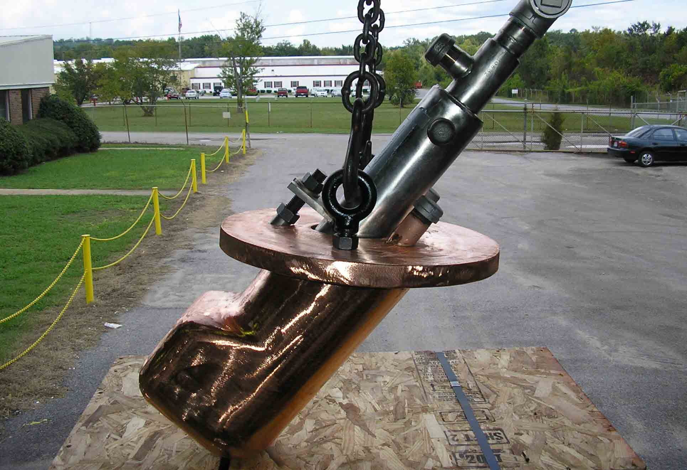
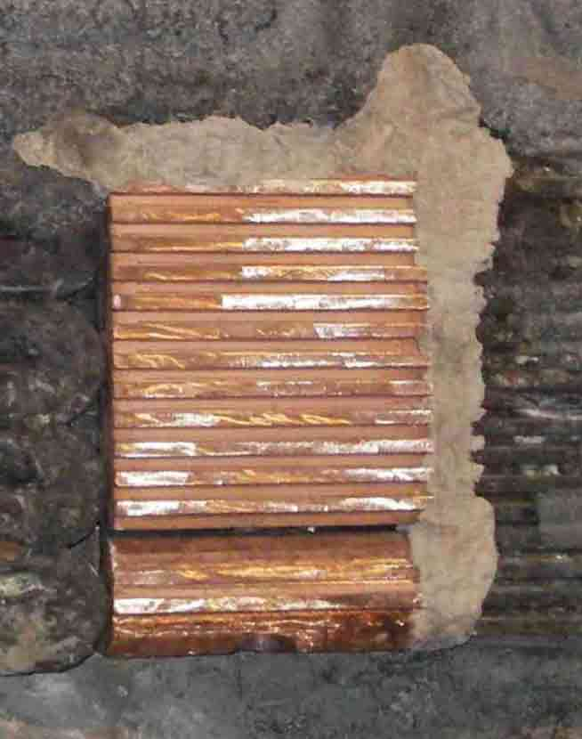
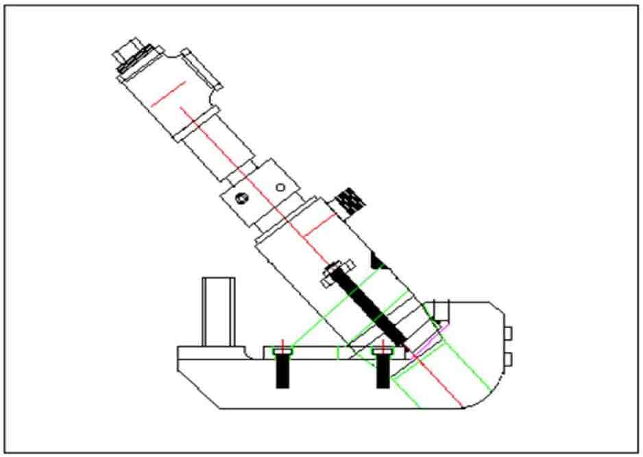

The Sump Panel and Cast EBT Corner Panel are specifically designed for optimal placement of the PyreJet™ nozzle in the EBT area. These designs have proven very successful for lancing function (for bath decarburization) as well as keeping the EBT area free of un-melted scrap. These panels can use either the PyreJet™ or ALARC™-Jet technologies and should be installed a minimum of 900 mm from the steel bath.


Cast EBT Corner Panel Installed in an EBT Panel

Cast EBT Corner Panel